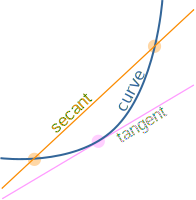

Tangent Lines and Secant Lines
(This is about lines, you might want the tangent and secant functions)

A tangent line just touches a curve at a point, matching the curve's slope there.
(From the Latin tangens "touching", like in the word "tangible".)
A secant line intersects two or more points on a curve. (From the Latin secare "cut or sever")
They are lines, so extend in both directions infinitely.
Circle
On a circle they look like this:

Theorems
There are three theorems of interest here: